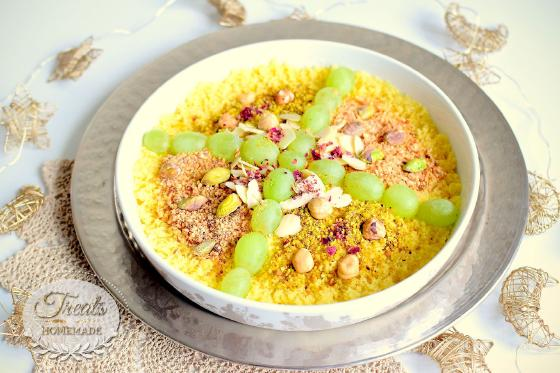

Masfouf

Description
Tunisian masfouf is a sweet couscous with extra fine grains. It is usually prepared during the holy month of Ramadan for Suhur.
Ingredients
- 500g of extra fine couscous or medium semolina
- 150g of cold butter, diced
- 4 to 5 table spoons of sugar
- 100ml of warm water
- 2 tbsp of olive oil
- 1 tbsp of orange blossom water (optional)
- Nuts, dates, grapes or pomegranate
Instructions
- Wet the fine couscous or semolina olive oil then mix well so that the grains don’t stick together.
- Steam the couscous for 15 minutes.
- Wet the steamed couscous or semolina with warm water, and mix well.
- Steam again for 20 to 30 minutes, until the grains are soft and cooked.
- When ready and still hot, put the diced cold butter on the couscous and mix until it is totally absorbed then add sugar.
- You can also add orange blossom water for more flavor.
- The masfouf is ready. It is usually decorated with nuts and dates. You can also enjoy it with pomegranate, grapes or dried raisins.
- Serve warm.